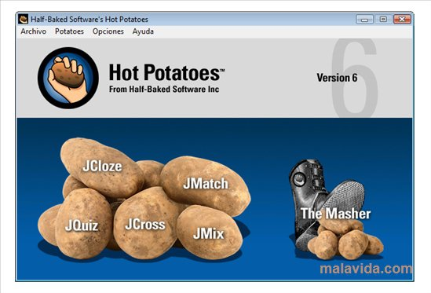

l'image et la page html se trouvent ds le mm dossier l'image s'affiche à sa taille d'origine (665*464)
Redimention de l'image avec l'attribut style 300*100
Redimention de l'image avec les attributs width et height 300*100
Redimention de l'image en précisant une seule propriete width ou height
Generalement, on ne modifie que l'une des deux dimensions de l'image (la largeur ou la hauteur) l'autre dimension sera calculée automatiquement afin que l'image conserve ses proportions.